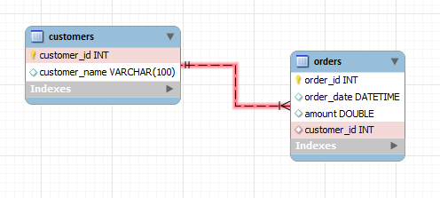

Types of Databases
Now that you know what a database is and why you need one, how do you go about choosing one? There are many different databases for each need but we will focus on the two main categories, relational and non-relational.
Relational Databases
Structure
Relational databases are table-based, you can think of them kind of like a more powerful excel spreadsheet! They are called relational because you can define relationships between different tables. For example, each customer could have an ID and each order would have the ID of the customer who it belonged to:

For relational databases, the schema must be predefined, which provides a rigid structure where you can specify constraints. For example, you could ensure that a column like order amount must be positive doubles only, which can help to keep data consistent.
They also tend to follow the ACID model, which is super important for data validity:
- Atomicity: All the changes are performed or none of them are. Partial updates to the database can cause future inconsistencies so instead, rejecting the whole transaction is favoured.
- Consistency: Changes must lead to a valid state, maintaining database invariants or rules. This prevents database corruption by an illegal transaction.
- Isolation: Ensures that if the changes were done concurrently, you would get the same result as doing them sequentially.
- Durability: After a transaction completes successfully, these changes are persisted, even if the system containing the data were to fail or crash.
Language
Most relational databases use the same structured query language (SQL) for defining and manipulating data. SQL follows the declarative programming paradigm, which means you describe what needs to be done, not how to get it done. In turn, this allows for more complex queries on data.
Scalability
In general, relational databases are vertically scalable. This means that you scale by adding more power to one machine (CPU, RAM, SSD).
Downsides
SQL can be restrictive in the sense that it requires that you use predefined schemas to determine the structure of your data before you work with it. This means that future changes in the structure are more difficult and can be disruptive to your system. Additionally, with the increasing prevalence of cloud computing, being vertically scalable can be seen as a downside since you can only increase the power of one machine so much.
Non-Relational Databases
Structure
Non-relational databases are quite literally not relational, they aren't in a strict table format and are described as not only SQL (NoSQL). This is because they were made to address the limitations of relational databases, especially in big data and real-time web applications.
They are usually in the following formats but the common theme is that they have dynamic schemas for unstructured data, which leads to more flexibility:
- Document: JSON documents, so you can think of them as objects in OOP.
- Key-value: 1:1 relation between keys and values where keys are unique.
- Graph: In the sense of the computer science data structure with nodes and edges.
- Wide-column: Tables with rows and dynamic columns, kind of like a 2D key-value store.
Non-relational databases also tend to follow the BASE model, which favours availability over consistency. Where ACID ensures that data is always consistent, BASE ensures that data will be consistent at some time in the future:
- Basically Available: Basic operations are available as much as possible without any kind of consistency guarantees.
- Soft state: After some amount of time, we only have some probability of knowing the state. This means that stores don't have to be write-consistent and that replicas of the store do not have to be mutually consistent.
- Eventually consistent: We will eventually be able to know what the state of the database is, and so any further reads will be consistent with our expectations.
Language
Unlike relational databases, there is no single query language for non-relational databases. Since you can create documents without having to first define their structure, each document can have its own unique structure and the syntax can vary from database to database.
Scalability
Non-relational databases are often horizontally scalable. This means that you can scale by adding more servers, which is often cheaper. In general, this means having a distributed database with many small servers as opposed to one big server.
Downsides
More flexibility isn't always a good thing since you have fewer guarantees about your data, and depending on the use case, this could be important. This relates to less consistency due to not having full ACID transactions.
Conclusion
As with everything in computer science, there are tradeoffs with each choice of database. Ultimately, the choice between relational and non-relational is not a total dichotomy. It is more like a spectrum from flexibility and availability to rigidness and consistency where plenty of databases exist in the middle but cannot truly guarantee either. Your choice will always depend on your use case!
Getting Started
SQL
Beginner SQL Tutorial: Learn SQL Basics While Analyzing Bike-Sharing
- I found this tutorial to be pretty good for getting started quickly, it uses python with SQLite to teach the basics of SQL queries and relational data.
Learn PostgreSQL Tutorial - Full Course for Beginners
- You should check this out if you want an even more comprehensive guide. It teaches PostgreSQL, which is a fairly popular choice for SQL databases.
NoSQL
How to get started with MongoDB in 10 minutes
- MongoDB is one of the more common NoSQL databases out there and even provides a free tier to help you get started with your programs.
Get started with Cloud Firestore
- Firestore is another pretty common one that provides a free tier as well through firebase.
Additional Resources
- This video by Fireship on 7 Database Paradigms gives a really good explanation of the pros and cons of each database and when to use them.
- If you are interested in the tradeoffs between databases you can check out the CAP theorem, which states that databases cannot provide all 3 of consistency, availability, and partition tolerance.